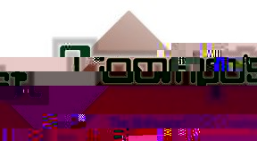
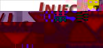

RECODER is the core of its father system,
COMPOST.
COMPOST is a Software COMPOsition SysTem, further developped within
the EasyComp Project.
It defines a component model and composition operators,
including architectural connectors.

Inject/J
is a scripting environment for Java code transformations that uses RECODER.
JGoose-Echidna
is a set of free tools for quality analysis and visualization of object-oriented software systems structures.
A. Ludwig, D. Heuzeroth, Metaprogramming in the Large, Generative Component-based Software Engineering (GCSE), Jan 2000, to appear in LNCS
U. Aflmann, A. Ludwig, Introducing Connections into Classes with Static Metaprogramming, Coordination 1999, Apr, LNCS, Vol. 1594, Springer Verlag.
A. Ludwig, Automatische Transformation grofler Softwaresysteme, PhD thesis (german), to be submitted.
Under construction.
Under construction.